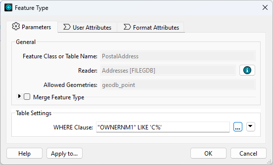
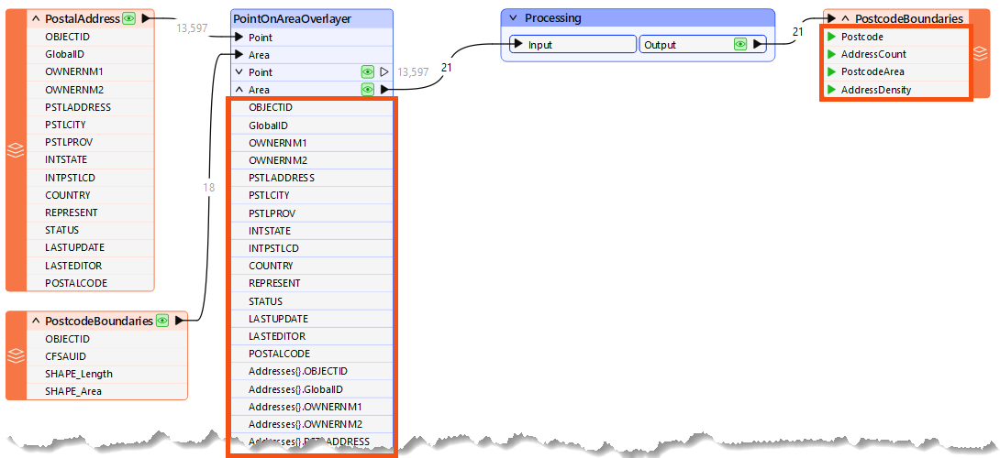

After completing this lesson, you’ll be able to:
Performance methodology is weak when a workspace's design causes the workspace to use more system resources (CPU and memory) than necessary. Performance methodology means setting up a workspace to run efficiently, saving you valuable time.
A typical scenario in FME is to read data into a workspace and then filter out features (records) that are not required:
However, when data is read and immediately discarded, the resources used to read that data are a direct performance loss.
If data is filtered as it is read - rather than afterward - performance is much better, and many formats have parameters to do just that:

Here, a ‘WHERE Clause’ parameter applies the required filter directly to the Geodatabase reader. Only data that matches the where clause is read and enters the workspace.
The schema of a source dataset is represented on the FME canvas by feature type objects:

Not connecting a feature type to other objects in your workspace is equivalent to reading and discarding data and is detrimental to performance.
When adding readers, FME prompts the user to select feature types to add to the translation. You should avoid adding feature types you don't need and remove ones already added but not connected.
Excess feature types slow your work, clutter the canvas, and make maintaining a clean and tidy style harder.
Every reader has a parameter (Parameters > Features to Read > Feature Types to Read) that controls which feature types are read when the workspace runs. You can quickly choose which feature types to use with this parameter. Note, however, that if you link this to a user parameter, the end user will decide. In that case, you should ensure only the feature types are available to select. It is still good practice to find and disable or remove any feature types you don't currently need to use, but this parameter offers a shortcut that can also improve performance.
Once data has been read into a workspace, it still can be reduced in size to assist performance. For example, attributes not defined in the output schema are not necessary to a workspace and can be removed:

Here, a workspace author calculates the number of addresses in each city's postcode (CFSAUID). The address attributes are not required in the output schema but are copied onto the postcode features along with a list of addresses, and everything is carried through to the end of the workspace.
In this scenario, the author should avoid the PointOnAreaOverlayer options for copying attributes and creating lists:
This step will reduce the memory required to run the translation without affecting its output.
Lists are the worst attribute type to keep for no reason since they can have multiple values for each record. Parameters in many join transformers allow the author to generate only the list attributes required:
Sometimes, scaling up/performance means using more datasets of varying types and quality. If data quality is considered, future performance can be protected.
One way to design for future capabilities is by using error trapping.
Error trapping is a way to design a workspace so that unexpected data does not cause the workspace to fail. The author attempts to foresee potential data problems and build methods to handle them.
Error trapping can be as simple as adding a test or filter transformer to weed out bad features, or it can be more complex and include different ways to process data, depending on the circumstances.
The Tester transformer has an operator for testing whether an attribute has a value.
This is very useful for error trapping, as it tests whether an attribute has a value before using it as the source for a parameter.
You can use the Logger transformer to issue Information, Warning, and Error messages to the log.
You can use the Terminator transformer to issue custom error messages, which is also helpful in building more extreme error-trapping logic into your workspaces or custom transformers. If a specific condition means the workspace should fail with an error, you can use a Terminator to catch those cases.
For advanced use cases, you can use error trapping and attribute validation techniques to build a testing framework for your workspaces. You can learn more about testing frameworks from this guest post on our blog or by checking out the rTest for FME tool.